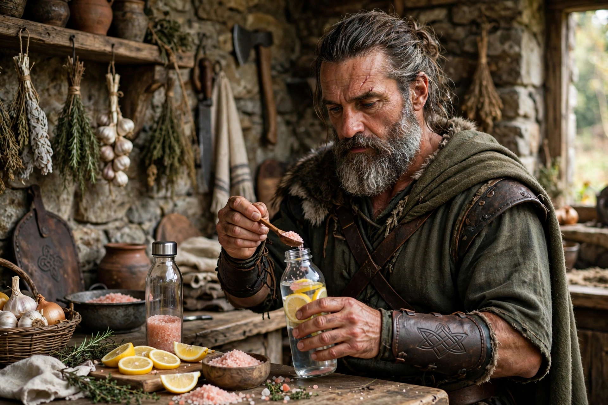

Pré-Treino e Hidratação de Qualidade Após os 40: Energia Real Sem Efeito Rebote
Após os 40 anos, o velho café preto forte e um copo d'água já não são suficientes para sustentar um treino de força de verdade. A queda natural na produção de energia celular e a menor capacidade do corpo de reter água fazem com que a escolha do pré-treino e da hidratação se torne tão importante quanto o próprio exercício. É isso que separa quem treina com força até o fim e quem morre no meio do treino.
O segredo não é comprar o pré-treino mais caro e colorido da loja de suplementos. Esses produtos cheios de beta-alanina causam aquela coceira, formigamento e taquicardia que, depois dos 40, mais atrapalham do que ajudam. O foco deve ser em energia limpa, foco e hidratação celular real.

1. O Pré-Treino Natural que Realmente Funciona Após os 40
Esqueça estimulantes artificiais. Para quem tem mais de 40, os 3 melhores pré-treinos são naturais, baratos, sem efeito colateral e com comprovação científica:
- Café + Creatina (3g): A combinação mais estudada do mundo. O café te dá foco e disposição imediata por cafeína, e a creatina te dá força para mais 2 repetições em cada série e melhor recuperação. Tome 30 minutos antes. Creatina monohidratada pura, sem mistura. É o suplemento mais seguro após os 40.
- Beterraba em pó ou suco natural: Rica em nitrato, ela aumenta o óxido nítrico e fluxo de sangue para o músculo. Resultado: você demora mais para cansar, tem menos dor no dia seguinte e melhora pressão arterial. Ideal para quem sente que "falta ar" rápido. 200ml de suco 60 min antes.
- Banana + Pasta de amendoim: Se você treina de manhã cedo em jejum, essa é a melhor opção. Entrega energia de forma lenta (carb + gordura boa), evita queda de glicose e protege massa muscular. 1 banana + 1 colher de pasta 40 min antes.
2. Hidratação de Qualidade: Não é Só Beber Água
Após os 40, a sensação de sede diminui 20%, mas a necessidade de sais minerais aumenta. Beber 2 litros de água pura durante treino pode até piorar sua cãibra, pois você dilui sódio do corpo e perde mais mineral no suor. Hidratação de qualidade é água + eletrólitos.
Nosso suor perde sódio, potássio e magnésio. Se você repõe só água, fica fraco, com dor de cabeça e cãibra à noite. Isso é muito comum após os 40 e confundido com "idade".
Receita caseira do Velho Guerreiro para 1 garrafa de treino (isotônico natural): 500ml de água + espremeda de meio limão + uma pitada pequena de sal rosa do Himalaia (3g) + uma colher de chá de mel ou açúcar de coco. Isso repõe sódio, potássio e magnésio, os 3 minerais que evitam cãibra, dor de cabeça pós-treino e fadiga. Custa R$ 0,30 e vale mais que Gatorade.
Regra prática que uso: pese-se antes e depois do treino. Cada 1kg perdido é 1 litro de líquido que você precisa repor nas próximas 2 horas, não de uma vez. Beba aos poucos.
| Erro de Hidratação 40+ | Consequência | Solução |
|---|---|---|
| Beber só água pura em excesso | Cãibra e dor de cabeça | Água + pitada sal + limão |
| Não beber durante treino | Queda de força de 15% | 200ml a cada 20 min |
| Tomar energético industrial | Pico e queda de glicose | Café + creatina natural |

3. O Que Evitar Antes de Treinar Depois dos 40
Alguns hábitos comuns sabotam completamente seu rendimento nessa fase e aumentam risco de lesão:
- Jejum total para treino de força: Após os 40, treinar em jejum completo aumenta risco de perda muscular e tontura. Se treina cedo, coma pelo menos banana + pasta ou whey + água.
- Energéticos industrializados: Taurina em excesso + açúcar dão pico de energia de 15 min e depois vem queda de pressão que acaba com resto do treino. E sobrecarregam coração.
- Excesso de beta-alanina e cafeína alta: Mais de 300mg de cafeína causa ansiedade, tremor e atrapalha sono. Sono ruim = menos testosterona e menos músculo.
Conclusão: Energia Inteligente
Energia para treinar após os 40 não vem de estimulante forte, vem de estratégia simples e repetível. Um café com creatina 30 min antes e uma garrafa de água com sal e limão durante treino valem mais que qualquer pré-treino de R$ 200 cheio de corante.
Teste essa combinação por 7 dias e você vai sentir diferença na força, foco e recuperação. Sem coceira, sem taquicardia, só energia limpa para durar treino todo e ainda ter disposição pro resto do dia.
Força e disciplina.
— Velho Guerreiro